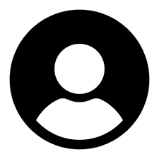

VISUAL DESIGNER
I design seamless digital experiences that balance usability and aesthetics. A fast learner and film enthusiast. I blend storytelling and craft to make products and projects that feel human and purposeful.
Know more about me →
Recent Projects
Highlights from my latest work - UI/UX, branding, and experience design.
Testimonials
Dr. E. Suresh Paul
Dean, School of Media Technology and Communication, VelTech
Chethan has always stood out for his clarity of vision and depth of thought. He approaches every project with intent and originality, turning ideas into meaningful work that reflects both intellect and purpose.
Dr. Nilanjana Bairagi
Associate Professor, NIFT Bengaluru
Chethan is a wonderful and talented student, an absolute joy to work with. His dedication and creativity shine through everything he does. I have no doubt he's going to achieve great things.
Dr. Siddique A. Ahmed
Scientist-D, Central Silk Board
Chethan possesses exceptional skill and understanding in his field. His talent is undeniable, and I've always told him not to get distracted by other paths. He truly belongs here and has immense potential to grow.
Selva Vinayagam
Cinematographer, Asst. Professor
Chethan has an impressive technical grasp of the camera and visual storytelling. His ability to balance the creative and the technical sides of filmmaking sets him apart from most young professionals I've worked with.

Govardhan Reddy
Managing Director, Croplot Machine Learning Pvt. Ltd.
Chethan has an instinct for storytelling that goes beyond visuals. He approaches every stage from concept to final cut with clarity, discipline, and genuine empathy for the subject. His work captured both the emotion and the impact we wanted to convey.